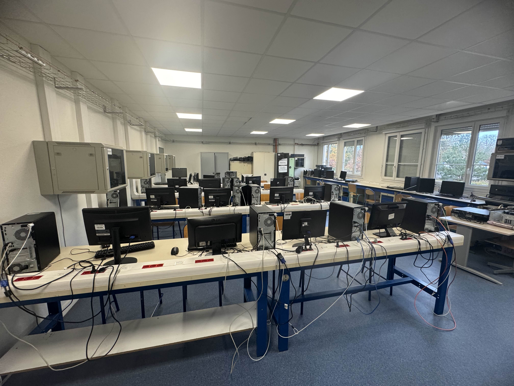

Lycée des métiers Les côtes de Villebon
3, rue Henri Etlin - 92360 Meudon - 01 46 01 55 00

La clase CIEL es una formación especializada que combina la ingeniería eléctrica con los procesos

La clase CIEL es una formación especializada que conecta el mundo de la electricidad con la ingeniería y los procesos de industrialización. Diseñada para estudiantes que buscan una carrera técnica con un enfoque en el diseño y la implementación de sistemas eléctricos, CIEL forma a futuros profesionales capaces de gestionar proyectos completos, desde la concepción de soluciones hasta su puesta en marcha en un entorno industrial. En un mundo donde la automatización y las energías renovables están transformando las industrias, los estudiantes de CIEL adquieren competencias clave para innovar en este sector en constante crecimiento. La formación abarca tanto la parte teórica, como la física de los circuitos eléctricos y las normas de seguridad, como la práctica, donde los alumnos desarrollan proyectos relacionados con la creación de prototipos, el análisis de sistemas eléctricos y la integración de tecnologías avanzadas en procesos industriales.
Además de las habilidades técnicas, esta clase fomenta un pensamiento analítico y creativo, enseñando a los estudiantes a optimizar procesos, reducir costos y mejorar la eficiencia energética en contextos reales. La formación está respaldada por talleres equipados con tecnología de última generación, donde los estudiantes trabajan con equipos que reflejan las demandas actuales del mercado laboral.
